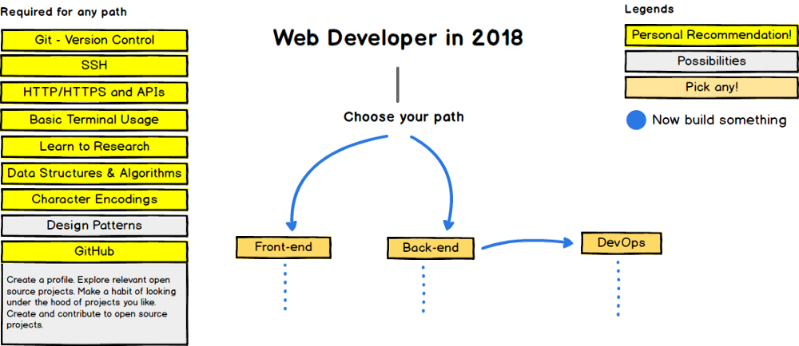
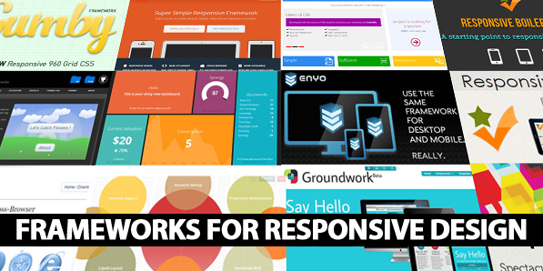

Practical Approach to Web development
07 April, 2018
“There are three responses to a piece of design — yes, no, and WOW! Wow is the one to aim for.” -Milton Glaser.
Read this short, to the point article as it guides you through how you should approach towards web development.
So you are a beginner having no knowledge about this field.
No Problem. This article will remove all your doubts regarding how you should start web development. It is written in an easily understandable language and practical steps which can help you start with web development.
Why do I write?
The main reason is that I am also a web developer, willing to help all the aspiring web-developers out there who want to step into this community of developers, but need a mentor. I committed many mistakes when I was a beginner, and I don’t want anyone else to make the same mistake which I made.
“You don’t have to be great to start,
but you have to start to be great.”Let’s Start This Awesome Journey Of Web Development.
ROADMAP

1. CODER’S TOOLKIT
Probably, at this stage you are an absolute beginner to coding or development and you need to know what to do first, and how to start.
Before we begin, there are some tools that you must have which will make your life as a web developer much more easier.
- A Laptop — that is the basic need
- A good web browser — chrome, chrome or maybe chrome
- A text editor — Atom, VS Code, Sublime Text, Notepad++ or any IDE
- FTP/SSH Tool (Filezilla, Putty, gFTP) — you will require these in later stages of development
- Cloud Storage (Optional) — Dropbox, Google Drive etc.
2. Lights! Camera! Code!
At this stage, you have already got a good toolkit which contains everything you will need. Now you must start coding.
- HTML5 (Get yourself familiar with all these and code)
* Tags
* Attributes
* Links
* Images
* Tables
* Layouts - CSS3 (Learn the basics of css, selectors, declaration, property and value)
Right now you are capable of making some nice and visually attractive websites, but your web sites are not yet dynamic and user friendly. - Basics of any design software (choose any one, will help you a lot)
* Photoshop
* Illustrator
* GIMP (for linux users) etc. - Basic Javascript, get to know the following things.(Javascript will bring life to your web pages)
* Basic JS (Dont jump into Node.JS and frameworks for now)
* Datatypes: String, Number, Arrays, Objects etc.
* Functions, Conditionals, Loops, Operators, etc.
* Event handling
* JSON
* jQuery (Only if you feel really comfortable with JS)
CONGRATS! You are a WEB DESIGNER now.
3. Three! Two! One! DEPLOY
Congrats, you are a web designer now. You now have HTML, CSS and JavaScript in your hands, you can make basic websites, you also know the basics of one design software, you know how to build static websites and front end, you can call yourself a web designer.
Before going any further you must do some more things.
- Learn about GIT (or, any other version control)
- SSH
- Learn basic
Terminalusage (or,Command Promptin windows) - Get a shared hosting account (Hostgator, InMoton, 000webhost, etc)
- Learn Cpanel basics (Email, FTP Setup)
- Upload your project via FTP
- Register a domain name and link to your hosting account
Web Designer! you’ve got opportunities out there
- Build simple, attractive websites for startups
- Build UI’s for Web Applications
- Do Internships
- PSD to HTML/CSS conversions
- Work for a company or be a freelancer
4. Time for decisions (IMPORTANT DECISIONS)
Now is the time you will have to ask yourself where to go. You can continue and go deep in frontend development or you can go for backend developer.
Choose where to go next……
- Frontend HTML/CSS frameworks (Bootstrap, Foundation, Bulma, Materialize etc…)
- Server side programming (PHP, Ruby, Django, NodeJS..)
- JavaScript Front end Frameworks (React, Angular…)
- Databases (MySQL, PostgreSQL, Hadoop, Mongo….)
4a) So you choose to develop your skills in front end

Responsive web design, huh!
Learn any one(or more) of the following frameworks, this will make your life very easy.
4b) So you got some coding skills? Try Backend!!

Backend guy?
Choosing to be a backend developer sure is a wise option at this point. Now you should learn some some server side scripting language. Choose any one (or more, though there is no need of learning more than one!)
- PHP — Not the best language but is rock solid and not going anywhere for years.
- Node.JS — New, Exciting, Powerful, Amazing Developer Community. (I personally prefer you to choose this)
- Ruby on Rails — Great framework, but not so popular and has levelled off
- Python — Easy to learn but not exactly popular for doing web programming nowadays..
Want more information about how to start off with backend? Read this article
4c) Since you have stepped into backend, try learning databases
Relational Databases
- MySQL
- PostgreSQL
NoSQL databases
- MongoDB
- CouchDB
Pick one to focus on:
- PHP/MySQL
- Node.JS/MongoDB
4d) Move your dev skills to a next level
Learn the frameworks that are highly in use today.
- Angular
- React [Flux/Redux]
- Apollo Client ( A fully-featured, production ready caching GraphQL client for every server or UI framework)
- Vue.JS
- Express/Sails
- If you code with PHP, learn
* MVC
* Routing
* Database Mining
* Helpers
* Data Binding etc..
5. Side Technologies To Learn (no matter you do frontend or backend)
Awesome Things Coming Up!!!! STAY TUNED!!!!
To work in a professional environment, you must need to know about the following
- GIT (or any other) Version control & GITHUB
- SSH & Basic Command Line
- CSS Precompilers — SASS/LESS
- APIs/REST Services
- HTTPS/SSL
Deploying your applications
Now you have much more knowledge than before, and probably you have started making your own web based applications, now use these technologies to get your app online.
- Dedicated Server/VPS
- App hosting — Heroku, Digital Ocean, AWS
- Deploy tools
- Linux command line
- Maintenance & Updates
6. Web Developer! you’ve got opportunities out there.
Congratulations! You can finally call yourself a Web Developer and you have got some exciting opportunities out there.
- Create simple to advanced web applications
- Build backend API’s
- Teach fellow developers
- Work with servers
- Work with databases
- Work with network security
- Get a great job
- Do freelancing
- Start your own buisness
7. Move one step forward
Learn about content management systems (CMS) like wordpress, Joomla, Drupal etc. They are great for working, offer fast deployment, there are thousands of plugins/addons/templates, and they offer great maintenance.
Mobile App Development
Now that you have come to this level, why limit yourself only to web? Mobile Applications are the future. All in all there are two types of applications, Native and Hybrid.
A Native application is the one which is (as the name says) native to the operating system. For example, say I am an android developer, therefore I make native applications using JAVA, XML, or KOTLIN etc.
A Hybrid application is the one which is (as the name says) not native, but built on another platform. This is where the great thing comes, as a web developer, you can even make your own mobile applications.
- Progressive Web Apps are the future
- You don’t need to learn JAVA/Kotlin/Swift/Objective C….
- JUST JS!!! Javascript is enough to make your own hybrid applications. Use the frameworks like React Native, Ionic, Cordova…
NOW WHAT?
- Keep Learning and exploring
- Focus on your career
- Make good profile
- Go back and learn another stack
- Learn about other domains (like Machine Learning, Computer Vision, Deep Learning, AI, Competitive Coding etc.)
- Keep yourself up to date with new technologies
- Do some research
- Learn some high level languages (C#, Java etc.)
- Increase your social circle, follow great people, get inspired and keep learning.
We can be friends…
I hope this article helped you, we can connect on GIT-HUB or LinkedIn.
Thanks a lot for keeping your calm and reading till end.
You know what to do and how to proceed, All the best!